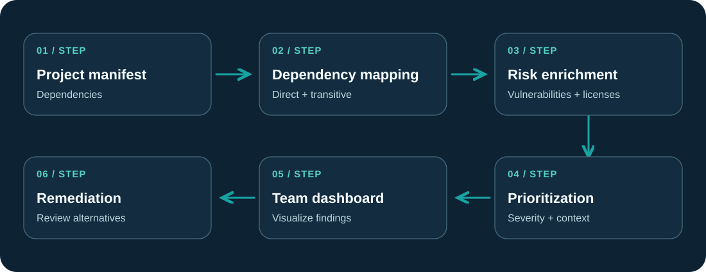

Parse dependencies
The concept began with common package manifests and organized direct and transitive software components.
Helping teams see and prioritize software supply-chain risks.
A developer-oriented concept for making third-party package vulnerabilities, licenses and dependency relationships easier to investigate.
Applications depend on many third-party components, including indirect dependencies. Teams need to understand which packages are affected, what the risk is, and where remediation may be possible.
Participated in the cross-functional engineering work and product framing for dependency risk visibility and remediation workflows.
The diagram simplifies the key ideas into an original, conceptual workflow—not a reproduction of internal architecture.

Conceptual architecture · Simplified for public communication · Not a proprietary diagram
Concrete technical responsibilities, without private code or configuration details.
The concept began with common package manifests and organized direct and transitive software components.
Vulnerability information, lifecycle concerns and licensing were framed as distinct reasons a component might warrant review.
Dashboards and dependency relationships were intended to help teams coordinate fixes rather than interpret isolated warnings.
A vulnerability may enter through an indirect package; relationship context helps identify what to change.
A package can create risk even without a currently listed vulnerability.
Automated risk matches may be incomplete or noisy and should be verified before remediation decisions.
The materials document a hackathon concept with feature demonstrations and proposed capabilities. Time-saving estimates are not presented as measured outcomes.
Hackathon-stage exploration, not a claim that every listed feature was implemented or deployed.
This case study is a high-level presentation of selected work. It does not disclose proprietary diagrams, internal configurations, private datasets, credentials or confidential business information. Publication should still be checked against applicable employer policies.